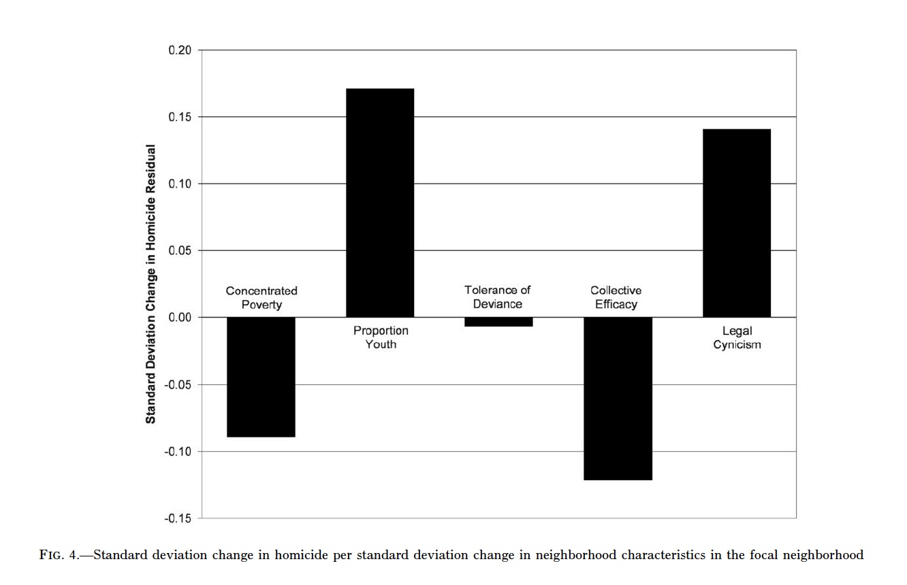
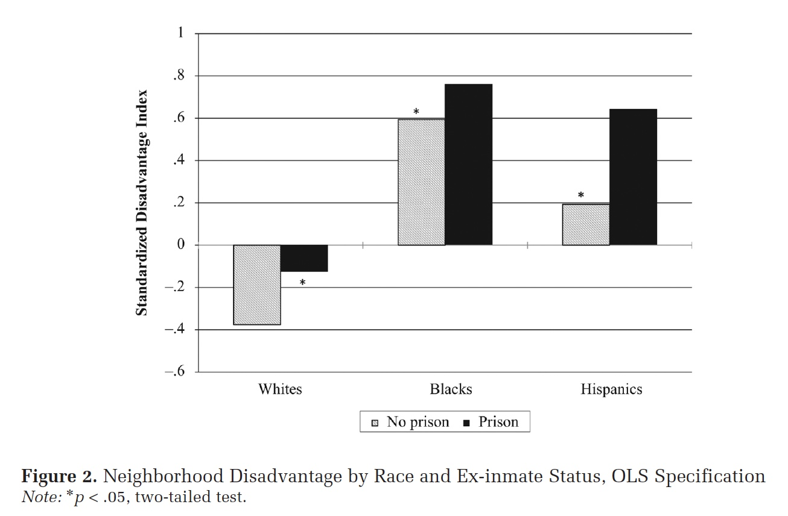

Review of Two Data Visualizations
Comparison of different styles of data visualization of two authors of my choice.
First Chart Citation:
Kirk, David S. and Papachristos, Andrew V., 2011. Cultural Mechanisms and the Persistence of Neighborhood Violence. American Journal of Sociology, [online] 116(4), pp. 1190-1233.
Here is a description from Kirk and Papachristos (2011) of their data visualization chart:
“In figure 4 we use the standardized coefficients from table 4 to compare the effects of concentrated poverty, proportion youth, tolerance of deviance, collective efficacy, and legal cynicism on the persistence of homicide. Through this analysis, we seek to determine which among these correlates of homicide are crucial for understanding why homicide persists in some neighborhoods over time. The bars displayed in this chart represent the association between homicide in a focal neighborhood (in terms of standard deviations) and each respective measure in the focal neighborhood. Not surprisingly, the proportion of youths in a neighborhood in 1990 strongly predicts the persistence of homicide from the early 1990s to the early 2000s. Homicide statistics show that young adults (ages 18–24) have the highest victimization and offending rates by a large margin (Fox and Zawitz 1999, 2004). Thus, if we assume that neighborhoods with high proportions of youths (under 18) in 1990 subsequently had high proportions of young adults (18–24) over the course of the ensuing decade, then such neighborhoods would be exposed to heightened risks of homicide victimization and offending because of the age distribution of the neighborhood population.” (Kirk and Papachristos 2011 p. 1226)

The authors continued to conclude:
“Most crucial for our core arguments, figure 4 reveals quite vividly the importance of legal cynicism for explaining the persistence of neighborhood violence. Even more so than collective efficacy, legal cynicism explains why rates of homicide remained stable in some Chicago neighborhoods (e.g., Bronzeville) during the 1990s when homicide declined dramatically citywide.” (Kirk and Papachristos 2011 p. 1226)
Second chart citation:
Massoglia, Michael, Firebaugh, Glenn, and Warner, Cody. 2012. Racial Variation in the Effect of Incarceration on Neighborhood Attainment. American Sociological Review, [online] 78(1), pp. 142-165.
Here is a description from Massoglia, Firebaugh, and Warner (2012) of their data visualization chart:
“We measure neighborhood disadvantage using census tract characteristics identified as important aspects of neighborhood socioeconomic disadvantage: poverty, joblessness, female-headed families, and receipt of public assistance… For our analysis we created a disadvantage index score for every census tract by first standardizing and then summing the measures at each wave. Because we are summing standardized scores, the result is an index with a mean of roughly zero at each time point. Higher scores on this scale reflect residence in a more disadvantaged neighborhood, so a positive coefficient for our post-prison measures would indicate that ex-inmates tend to live in worse neighborhoods following prison.” ( pp. 149-150)

They continued to describe their findings from the chart:
“We can draw on the descriptive statistics for a preliminary examination of ex-inmate neighborhood conditions; Figure 2 plots disadvantage scores broken down by ex-inmate status and race/ethnicity. Because we use a standardized index, the zero point on the x-axis reflects the sample mean, with scores above zero reflecting higher-than-average levels of disadvantage. Two findings stand out. First, there are striking racial disparities in neighborhood attainment, with blacks and Hispanics who have never served time in prison living, on average, in more disadvantaged neighborhoods than whites who have been in prison. Second, in initial support of Hypothesis 1, there appears to be a detrimental effect of incarceration.” (Massoglia, Firebaugh, and Warner 2012 p. 152)